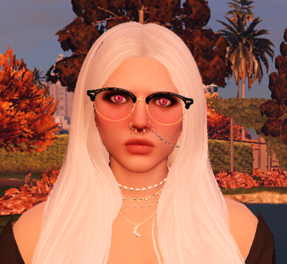

Datos personales
Nombre / Nombres del personaje: Hazel Lawrence
Apodo del personaje: Sin apodo
Edad del personaje: 28 años, 3 de octubre de 1997
Hazel Lawrence es un personaje de Infames Legacy que fue interpretada por Helsam en la primera versión de Infames Legacy.
| Hazel Lawrence | |
|---|---|
|  | |
| Datos personales | |
| Nombre | Hazel Lawrence |
| Apodo | - |
| Información personal | |
| Género | Femenino |
| Orientación | Bisexual |
| Información OOC | |
| Servidor | Infames Legacy |
| Interpretado por | Helsam |
Datos personales Historia Descripción física Personalidad y sexualidad Curiosidades Relaciones
Nombre / Nombres del personaje: Hazel Lawrence
Apodo del personaje: Sin apodo
Edad del personaje: 28 años, 3 de octubre de 1997
Viene de una familia rica de Miami, fue a Los Santos por sus estudios y trabajo. Más tarde se casaría con el amor de su vida, con el que tuvo hijos. Más tarde pasarían a vivir nuevamente a Miami para ayudar en el negocio familiar.
Altura del personaje: 1.70 m
Descripción física: Chica blanca, albina, pelo blanco, ojos morados. Tiene una cicatriz en el costado del abdomen por un trasplante de riñón y una cicatriz en el vientre a causa de la cesárea.
Personalidad: tranquila, paciente, amable, cariñosa, amorosa, comprensiva y risueña.
Orientación sexual: Bisexual.
Casada con Diego con el que tiene hijos.